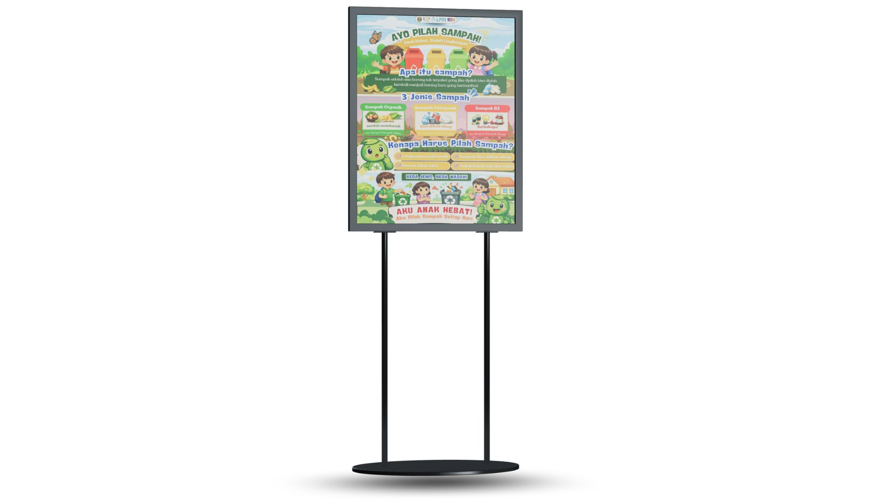
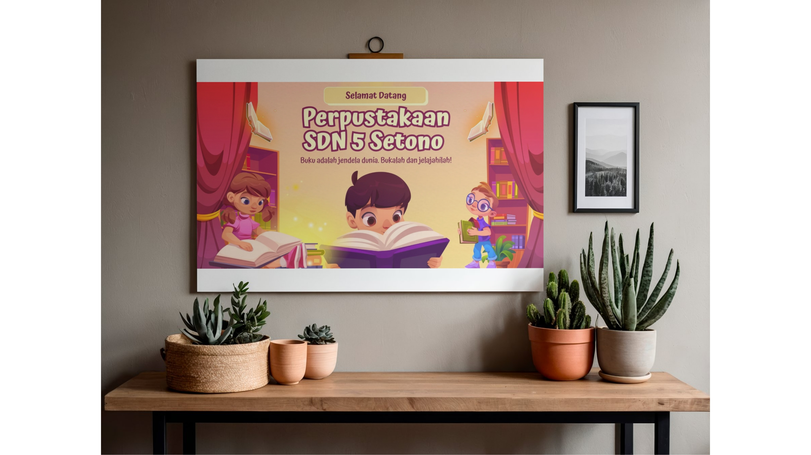

Dokumentasi Video
Tap untuk Putar
Video Edukasi Pemilahan Sampah
Video edukasi tentang pentingnya pemilahan sampah dan manfaatnya bagi lingkungan.

Tap untuk Putar
Profil Dusun Nglencer
Video sinematik mengenai potensi alam dan sumber daya manusia.

Tap untuk Putar
Aftermovie Pengabdian
Kompilasi momen terbaik selama 45 hari mengabdi di Dusun Nglencer.
Poster Program

Tap untuk Lihat
Poster Edukasi Masyarakat
Media visual kampanye kesehatan dan kebersihan lingkungan desa.
Banner Kegiatan

Tap untuk Lihat
Banner Utama Posko
Desain identitas visual kelompok yang terpasang di lokasi pengabdian.
Berita & Media Massa

Tap untuk Baca
Radar Jember (Liputan Khusus)
Artikel mengenai inovasi teknologi pertanian yang dibawa oleh Kelompok 22.
Buku Panduan

Tap untuk Membaca
Buku Saku Potensi Desa
Kompilasi data potensi ekonomi dan wisata Dusun Nglencer dalam satu buku.
Jurnal Ilmiah

Tap untuk Baca PDF
Jurnal Pengabdian Soshum
Publikasi hasil penelitian lapangan mengenai pemberdayaan UMKM lokal.
Hak Kekayaan Intelektual (HKI)

Tap untuk Lihat Sertifikat
HKI Modul Pembelajaran
Sertifikat resmi perlindungan ciptaan untuk kurikulum edukasi desa.